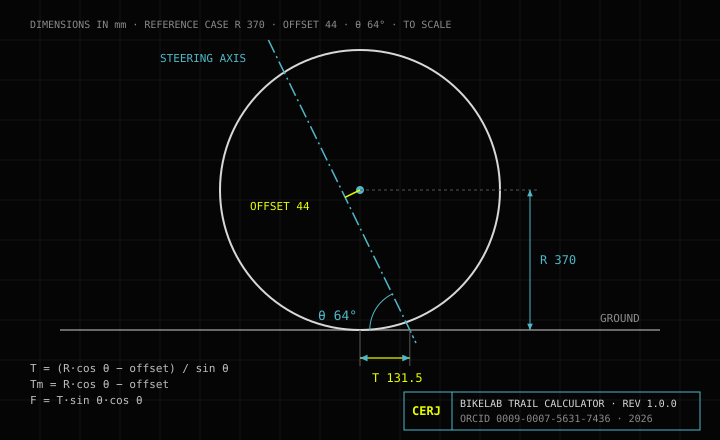

BikeLab Trail Calculator
Live demo of the calculation engine, running the same code as the published calculator.
running self-test…
Geometry
Result
Ground trail–
Mechanical trail–
Wheel flop–
+1° slacker–
+10 mm diameter–
Front compression
Dynamic θ–
Dynamic trail–
Values in mm. Head angle measured from the horizontal. Front compression models braking or a G-out with the rear held fixed: the head angle steepens and trail drops.
Full calculator with radius from tire size, balanced sag and riding-feel guide: bikelabstudio.com · Method and validation: derivation and checks.